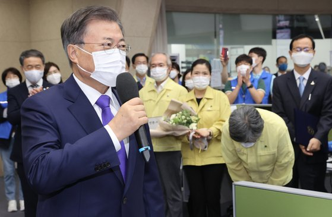

문재인 대통령이 11일 충북 청주 질병관리본부 긴급상황센터에서 정은경 초대 질병관리청장에게 임명장을 수여한 뒤 발언하고 있다. 정 초대 청장이 문 대통령의 격려의 말을 들은 뒤 허리를 깊이 숙이고 있다. 연합뉴스
'문재인 대통령의 격려에 정은경 초대 질병관리청장이 허리를 깊이 숙이고 있다.'
문 대통령이 11일 정 신임 청장이 있는 충북 청주 질병관리본부를 직접 찾아 임명장을 전달한 '초유의 현장 수여식' 기사 사진에는 이같은 설명이 달렸다.
정 신임 청장이 문 대통령을 향해 허리를 90도로 숙이는 모습은 문 대통령이 임명장을 수여한 뒤 격려의 말을 전하는 과정에서 포착됐다. 문 대통령이 자신을 쳐다보고 있지 않은 상황이었지만 정 신임 청장은 문 대통령의 응원과 위로 발언에 진심으로 응답하고 있었던 것이다.
문재인 정부 들어 대통령이 장·차관에 대한 임명장을 청와대 밖에서 수여한 것은 이번이 처음이다. 전시(戰時)에 비유되는 급박한 상황에서 총지휘관에 해당하는 정 신임 청장이 청와대까지 다녀가는 수고를 덜고 다음날 출범하는 질병관리청 직원들의 사기 진작을 위해서도 대통령의 현장 방문이 필요하다는 판단이 담긴 것으로 보인다.
차관급에게 대통령이 직접 임명장을 수여한 것도 이례적이다. 그동안 장관급에게는 대통령이 임명장을 줬지만 차관급의 경우 국무총리가 대신 전달하는 것이 대부분이었다. 정 신임 청장에 대한 문 대통령의 신뢰와 기대가 드러나는 대목으로 볼 수 있다.
보통 임명장 수여식에 신임 기관장의 가족들이 참석하는 것과 달리 정 신임 청장은 동료 직원들과 함께했다. 가족보다는 고생한 직원들과 같이하고 싶다는 정 신임 청장의 뜻에 따른 것이었다.
문 대통령은 임명장 수여식 후 꽃다발과 '건강한 국민, 안전한 사회'라는 문구가 새겨진 축하패도 건넸다. 꽃다발은 '새로운 만남'을 의미하는 알스트로메리아, '감사'를 상징하는 카네이션, '보호'의 뜻을 담은 산부추꽃 등 세 가지 꽃으로 이뤄졌다는 게 청와대 측 설명이다.
김지혜 기자 kim.jihye6@joongang.co.kr
▶ 넌 뉴스를 찾아봐? 난 뉴스가 찾아와!
▶ 그래서, 팩트가 뭐야? 궁금하면 '팩플'
▶ 세상 쉬운 내 돈 관리 '그게머니'
ⓒ중앙일보(https://joongang.co.kr), 무단 전재 및 재배포 금지